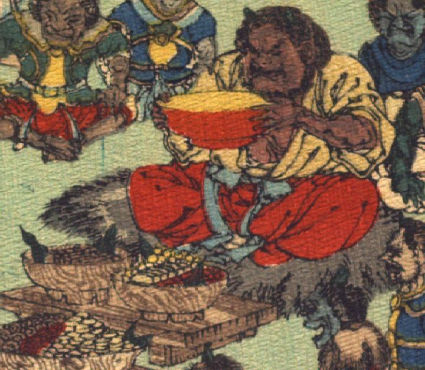

酒呑童子。肌は茶色く、頭部に縮れた髪を生やし、額に2本角が生えている。眉をしかめ、口は横に裂けている。黄色の着物を着て胸元をはだけて、赤い袴を履いている。毛皮の敷物の上に座り、両手で大きな朱色の盃を持っている。酒呑童子の前には、食べ物を盛った器が台に載せて置かれている。
出典：親書誌：U426_nichibunken_0113：Les Ogres d'Oyeyama／日付：2006／資源識別子：U426_nichibunken_0113_0004_0001
Copyright (c)2010- International Research Center for Japanese Studies, Kyoto, Japan. All rights reserved.